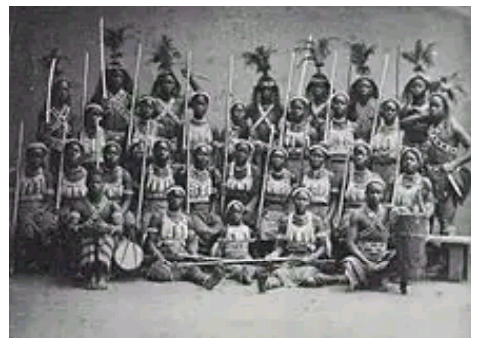

Initially both Iwere-le and Iwere-Oke were members of the same family but the two towns became separated as a result of Dahomey war. Akintola Agboju the whole with Egbeji was the progenitor of Oniwere of Iwere. Iwere-lle town was sacked and its chieftaincy and the son of Alaafin. People sojourned on a mountain they christened lwere- Oke. The town is the guest of the Elero of llero who had received the town warmly at the time of their migration during the Dahomian invasion of the town in 18 Century The Elero of llero sought the permission and consent of Alaafin of Oyo and granted the parcel of land to the town for farming and the place is called Awotan. This Awotan is the land used for farming by the founder of Ilero "Alawotan 
After the Dahomey war, some people moved back to Iwere- Ile and some settled down at Iwere-Oke. Two different views were obtained during the cause of writing this book. The first view said; during the time of Ajani as Oniwere of Iwere-lle, Ajani was persuaded to unite Iwere-Ile and Iwere-Oke together but Iwere-Oke people resisted. That fact prompted Oba Ajani to seck the intervention of the Alaafin of Oyo, but inspite of the Alaafin's intervention, Iwere-Oke people still remained adamant, at the meeting with Iwere-Oke people. The Alaafin passed a question to which Iwere-Oke people answered that Akinyemi was the royal father that would lead them. The answer did not go well with Ajani, because he felt that Akinyemi his brother was making things difficult for him. Alaafin of Oyo now ordered Ajani to leave them and Alaafin finally blessed them to settle at the Iwere-Oke, their present site. Akinyemi appoint Adejumo as Jagunmolu of lwere-Oke to lead Twere-Oke as a community, After the death of first Jagunmolu, Chief Odunrinde was the second Jagunmolu. The third Jagunmolu of lwere-Oke was Fawole. Fourth Jagunmolu was known as Gbadegesin.
These are other Chiefs:- Asaba of lwere-Oke, Elemo of Iwere-Oke, Osi of Iwere-Oke, Odofin of Iwere-Oke, Oninayin of were Oke, Aro of Iwere-COke, Eselu of Iwere- Oke, Baalo of Iwere-Oke, Iyalode of Iwere-Oke, Otun Iyalode of Iwere-Oke, Balogun of Iwere-Oke, Eleede of were-Oke, lyaloja of lwere-Oke, Baale Agbe of Iwere- Oke.
After the settlement of Iwere-Oke people there was scarcity of water and they complained to Elero of llero, The then Elero called Chief Aladikun to go and get source of water for the people of Iwere-Oke and the people moved from their former place to the area surrounding the new source for water. After three years of resettlement, Ayctoro people came as a new settler: people of Iwere-Oke now ordered one of their Chiefs to settle them at their former place where Ayetoro people were till today. He used Oko Okanlu (native hoe) which any King of Ayetoro must never see again in his life time before they settled down.
In another story of were-0ke, the people of Iwere-lle originated from le-lie, Akinola Agboju carried his people fron ile lfe to lwere-ile because of Kingship problem Contrary to the first view, Oba Olaniya carried people from Iwere-lle to Iwere-Oke because of Dahomey war in 18th Century After the people of lwere-Oke had settled down in the land given to them by Oba Ayoola the Elero of Ilero then, Ayinla and Oluale returned to Iwere-lle, and it remained only Olaniya at Iwere-Oke. After the returned of Oluale and Ayinla, they appointed first Mogaji to be the head of the town who was Akinteye Olaniya, followed by Popoola Olaniya, then Shittu Olaleru was appointed after the death of Popoola Olaniya followed by Chief Rasheed. Bolatito Olaniya in 1992 up till the period of writing this book. The First roofing house with Iron rooting sheet was at Onilu Compound Iwere-Oke
The first church was Roman Catholic Church which headship by Pastor Ajaran. The First Chief Imam was Chief Imam Badiru. The Cultural heritages of the town are: Egungun, Ogun Sango Baba Oja, Oko Okanlu. Iwere-Oke is made up of Christian, Muslim and traditional worshipers. The town has no Maternity or Clinic but have two public primary schools. The only secondary school was named IWA Community Girammar School that was built on the land of Iwere-Oke.
| 1 | Samson Oguntoye | Chairman |
| 2 | Alahji Basiru Ayanleke | Vice Chairman |
| 3 | Hon. Waheed Akintoun | Secretary |
| 4 | Kehinde Adekunle | Treasurer |
| 5 | Bolanle Awolere | P. R.O. |
| 6 | Lateet Alausa | Member |
Oniwere omo agbo maja bale ayaka, Ejekare Iwere kolojo gbedu, Gbedu. gberegede llukan ilu kan ti afi awo efonse, Abi eti ketepe bi ett ern. llu ti eru kogbodo jo olomo ni bawon jo, were eke omo koro npa, Omo ase rogbodo jale, Omo bibi lwere, won ki gun dodo, Kekeke leke nje, Omo ajolu tan ki etoj oba.